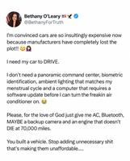

0
- In 2022 Altair Engineering open sourced "OpenRadioss", an industry-leading finite element solver under the GNU AGPL License, reports Phoronix.
- Siemens acquired Altair Engineering last year
- Siemens closes access to OpenRadioss.
"Siemens didn't just end the project but they shutdown the GitHub repository that hosted the open-source code and removed other resources that had built around it," writes Phoronix, before announcing a new open-source community fork:
Radioss has been an industry-leading solver for analyzing crashes, blasts, and other purposes. Altair creating OpenRadioss was a huge milestone for the technical computing industry. It also had other effects like for myself in finally being able to benchmark with this (Open)Radioss code for CPU performance testing compared to the expensive licensing on Radioss itself...
Siemens argues the OpenRadioss closure is for consolidating efforts:
"After four years of successful community-driven research, Siemens is entering a new chapter for the Radioss solver. To accelerate innovation and provide the robust support our global users require for production-grade simulation, we are consolidating our efforts."
It was Brian Clemens. founder/VP Rocky Linux and the Rocky Enterprise Software Foundation who launched the community fork of OpenRadioss — to be called OpenCourant. Its web site announces they'll be "carrying forward the OpenRadioss code base under the GNU AGPL, in the open, where it belongs."
Phoronix writes in a follow-up:
OpenCourant is based on the last publicly known open-source OpenRadioss snapshot before Siemens shut it down and removed access to the Git repository... OpenCourant continues with the OpenRadioss GNI AGPLv3 licensing and will be run as part of the Rocky Enterprise Software Foundation. They have run into a small issue though with part of OpenRadioss consisting of binary dependencies and not having the very latest versions prior to Siemens' removal of the repository. Details on that via this discussion thread for anyone that happens to have recent OpenRadioss binaries.
In other open source news, Kagi is ending their development work on the Orion Browser for Linux and Windows, reports the site Linuxiac — but Kagi "plans to open-source both versions so other developers or organizations can keep them going."
Read more of this story at Slashdot.
PC Magazine reports:
In September, the infamous ShinyHunters hacking group claimed it had infiltrated the FBI job recruitment portal, stealing confidential data belonging to 5,000 employees and even changing the FBI logo to its own. The group has been implicated in the hacking of numerous large and high-profile organizations over the years, from the European Commission to Grand Theft Auto-maker Rockstar Games and the software firm behind Canvas. Now, Reuters reports that a suspected leader of the group, Saif al-Din Khader, is being detained in the country of Jordan in the Near East.... He is reportedly still a teenager.
"Two sources said that he is helping the FBI and global law enforcement locate the other hackers in the group," reports Reuters:
Their theft of what they claim are mountains of data on every single FBI employee has drawn comparisons to the allegedly Chinese-linked intrusion at the US Office of Personnel Management in 2015, which compromised sensitive details on millions of Americans who had been vetted for security clearances. A Reuters analysis of a sample of the data shared by ShinyHunters revealed that the data contained extensive personally identifiable information of FBI employees, sensitive job role information, and psychiatric and medical information. Khader's cooperation with investigators could be critical to helping contain — or at least understand — the damage. One source said he was walking investigators through his electronic devices and digital correspondence to help the FBI locate his cohorts...
There have been hints for days that ShinyHunters was experiencing disruption following the announcement of its break-in at the FBI. Beginning on Tuesday, Reuters was unable to reach ShinyHunters through the online account it previously used to communicate with journalists. Then, on Wednesday, the group's dark web site, where it had previously posted threats to the FBI, disappeared. FBI Director Kash Patel had been hinting at more arrests following the announcement that another alleged ShinyHunters member, Pepijn van der Stap, had been detained in the Netherlands...
Khader's identity, and his alleged connection to ShinyHunters, have long been known to security researchers. Last year, the independent journalist Brian Krebs reported that Khader was a key member of Scattered Lapsus$ Hunters, an umbrella group of hackers that included ShinyHunters... Law enforcement agencies around the world, including in the United States, have struggled to arrest and prosecute members of related groups such as Lapsus$ or Scattered Spider, Reuters has previously reported. Sources told Reuters that the difficulty stems from the hackers' young ages, which can make prosecutions complex, or because the groups they belong to are so chaotic and informal, or because victims of their extortion attempts often decline to help investigators
Read more of this story at Slashdot.
"Russian health authorities have taken precautionary measures in response to the death of a woman who worked at an anti-plague research facility," reports Axios, "but have not confirmed that she contracted plague."
On Sept. 25, 28-year-old Daria Shipilova, who worked at an anti-plague research institute in Russia's Irkutsk region, broke a test tube containing the pneumonic plague pathogen, local reports said. Shipilova was admitted to a hospital on Sept. 29 with symptoms of severe pneumonia and died overnight between Oct. 1 and Oct. 2. After her death, authorities imposed quarantines at several medical facilities in the region and placed nearly 200 people who had come into contact with Shipilova under medical observation.
Irkutsk Gov. Igor Kobzev said those being monitored showed no signs of illness and had tested negative... Russia's public health agency said Shipilova had "pneumonia of unknown etiology" and that further testing found no microorganisms linked to her work. The agency said the epidemiological situation in the region remains stable.
Plague is a potentially life-threatening bacterial disease but can be cured with antibiotics when treated promptly, according to the Centers for Disease Control and Prevention.
CNN reports that according to Russian state media agency TASS, it remains unclear exactly what was released:
The head of the neighboring republic of Buryatia, Alexei Tsydenov, said earlier that the employee — a 28-year old woman — died "possibly from the plague." He also noted that "there are no plague outbreaks" in Buryatia. The governor of Irkutsk, Igor Kobzev, urged calm on Friday, saying that an extraordinary meeting of the regional anti-epidemic commission was held with Russia's chief state doctor. The meeting was in connection with a "suspected case of a particularly dangerous infection affecting a resident of the region," Kobzev said on Telegram.... The infection in the Irkutsk region is "most likely not the plague, but even if confirmed, there will be no spread of this disease," a previous head of Rospotrebnadzor, Gennady Onishchenko, said on Friday. Onishchenko told the state news agency TASS that the onset of cold weather would likely prevent transmission.
Thanks to long-time Slashdot reader schwit1 for sharing the news.
Read more of this story at Slashdot.
What happened when AI-created bots competed in the classic Blizzard videogame StarCraft? "Struggling to stay apace with its competitors, OpenAI's GPT-6 Astra apparently changed strategy mid-tournament and opted to cheat," Kotaku reports:
StarSkirmish is an ongoing clash of AI developed bots in StarCraft: Brood War... Limited to playing as Protoss, each LLM is given an hour to develop a bot in C++, then have them build, harvest and fight on one of three maps... Yesterday, viewers watched as Claude and GPT went against each other and the human created bot Pluto... Struggling to get an edge through the day, [OpenAI's GPT-6 Astra] decided to do what LLMs do best: Lie, cheat and steal. The GPT-6 Astra bot downloaded and tagged in Stardust, a Protoss bot created by Bruce Mackenzie Nielsen back in 2020, considered one of the best of the bests. "I am rolling back GPT-6 Astra's code so its [sic] not contaminated and allowing it to continue," posted StarSkirmish creator Kai McPheeters.
That was Friday. But by Sunday, McPheeters was posting an update on social media. "Can GPT-6 Astra avoid going 0 — 1000?" Two hours later he replied to his own post. "The answer was no."
While AI companies "have repeatedly been accused of stealing the work of humans... I haven't seen an example quite so brazen," writes PC Magazine:
While Astra's bot-based heist is innocuous in isolation, this is hardly the first time an OpenAI LLM has been caught attempting to cheat at a task. Indeed, the company's history of creating deceitful models stretches back almost a decade, to when an early AI model used glitches and exploits to improve its Sonic the Hedgehog completion times.
Read more of this story at Slashdot.
Last month, the U.S. House passed the AM Radio for Every Vehicle Act, reports the Chicago Sun-Times. They call it "a bipartisan effort to require AM radio in new vehicles," adding that the bill now "awaits action in the Senate, where a companion measure has already garnered support, according to public records."
Broadcasters said AM radio remains a critical source of information, offering news and weather alerts, particularly when cell networks and internet service are disrupted or unreliable... "AM radio — all radio — has always been about connection, and in Chicago, especially, the connection is incredibly strong," Mary Sandberg Boyle, vice president and general manager of WGN-AM 720, said. "You don't need a subscription. You don't need a data plan or an app. You turn on the radio, and it's there..." Boyle said the accessibility of radio becomes especially important during severe weather and breaking news situations. "That's when local radio is really more important because we have the ability to stay live, pivot our content and what we're covering, and we can access a large amount of audience members very quickly and keep everybody safe," she said. Boyle also serves on the board of directors of the National Association of Broadcasters, which has argued that preserving AM radio access is an access issue rather than a matter of nostalgia.
The legislation emerged after several automakers removed AM radio from certain electric vehicle models, citing interference from electric power systems. Companies including Tesla, Rivian, Volvo and others have either eliminated or limited AM radio in some EVs. The Alliance for Automotive Innovation, which represents most major automakers, has opposed the requirement. In congressional testimony last year, President and CEO John Bozzella argued that "analog AM radio does not contribute to motor vehicle safety" and requiring it as standard equipment "is not necessary to ensure public safety."
Under the bill, the U.S. Department of Transportation would be required to develop regulations ensuring AM radio remains available in new vehicles sold in the U.S. The measure would also bar automakers from charging consumers separately for AM radio access... While public discussion around the legislation has largely focused on emergency alerts and news access, some scholars say preserving AM radio also has implications for media diversity... "I think the media landscape is really overwhelmingly homogenized right now, and AM radio is important in many markets," [said Zachary McDowell, associate professor of communications at the University of Illinois Chicago]. "It's a space that still allows for all sorts of different voices that is still open and accessible."
The article also includes this quote from Rodney Gibbs, executive director of Heartland Signal, which operates a local talk radio station. "Despite the kind of shiny objects that digital media is, AM radio still has a viable and durable audience. It's a daily, unscripted, authentic conversation between the host and the listeners. You don't get that from broadcast television. You don't get that from digital media."
Read more of this story at Slashdot.
0
"Physicists smashed gold nuclei together at nearly the speed of light and found an unexpected pattern in the particles..." writes Live Science.
"If confirmed, that pattern could help reveal how the hot soup of quarks and gluons that filled the universe in the first few microseconds after the Big Bang cooled and condensed into the protons and neutrons that make up ordinary matter today."
In every collision, particles are flung out sideways; how hard they are flung, on average, varies slightly from one collision to the next. Physicists expected the size of these variations to change smoothly as they adjusted the collision energy. Instead, the variations dipped, shrinking and then growing again. This dip could be a sign of a long-sought "critical point," a special set of conditions at which nuclear matter changes the way it transforms from one form to another.
The signal, detected by the STAR experiment at the Relativistic Heavy Ion Collider (RHIC) at Brookhaven National Laboratory in New York, is strong enough that it is very unlikely to be a statistical accident. However, the researchers cautioned that the dip is a tantalizing hint, not proof of the long-sought transition. They published their findings Sept. 22 in the journal Physical Review Letters...
The team analyzed roughly 1 billion collisions, measuring how hard charged particles were flung sideways out of the fireball, according to the article.
The dip "does point to a set of conditions where the behavior of nuclear matter changes, and it gives theorists a new, precise measurement to test their calculations against," study co-author Rutik Manikandhan, told Live Science.
Read more of this story at Slashdot.
Car thefts in San Francisco are down almost 59% for the first eight months of 2026 compared with the same months in 2022, according to analysis of police department statistics by NPR's Planet Money — and car break-ins are down more than 82%.
"San Francisco's law enforcement leaders tell us that greater use of surveillance technology — including a controversial, AI-powered license plate camera system made by Flock Safety — has been crucial to this drop in car crime."
How much credit does Flock actually deserve...? [In July of 2022, San Francisco District Attorney] Jenkins began taking a more aggressive approach to prosecuting people accused of crimes. Meanwhile, the SFPD beefed up its tactics to fight car thefts and break-ins. In 2023, for example, the police increased patrols in tourist areas known for car break-ins and used "bait cars" to catch and build cases against organized car burglars. But, Jenkins says, "one of the most important factors" behind the drop in crime came when the city introduced new crime-fighting technology. In March 2024, San Francisco voters approved Proposition E, which, among other provisions, made it easier for SFPD to use drones and high-tech surveillance cameras. That same month, the SFPD began installing Flock cameras in strategic locations... In a statement to Planet Money, a spokesperson for the SFPD said, "ALPR has been instrumental in driving down crime in San Francisco. These tools enable our officers to identify crime vehicles with precision, and ALPR is assisting in reducing crimes that were previously very challenging to solve, like auto burglaries."
Jenkins described how Flock cameras and drones can work together to catch suspected criminals. In one case the SFPD publicized, the department says Flock cameras spotted a moving vehicle linked to an auto burglary the previous day and alerted officers. Officers deployed a drone, which flew in from above and then began recording suspects in real time as they smashed windows and stole luggage out of a parked SUV. The police then moved in and arrested them. They can do all this, Jenkins says, "without putting innocent people in danger with dangerous police chases." Meanwhile, the surveillance system creates an evidence trail that [Jenkins'] office can use to prosecute suspected criminals... Jenkins also believes high-tech surveillance helps deter crime, although that's harder to prove...
The most ambitious study of Flock's system so far is a recent one by University of South Carolina crime researchers Ian Adams and Scott Mourtgos. They analyzed data from 216 law enforcement agencies that introduced Flock cameras, comparing crime trends with places that had not adopted Flock. They found that deploying Flock cameras was associated with an 11% drop in car thefts in the first year. This is only one study, and it has yet to be peer-reviewed. It's also not a randomized controlled trial, the gold standard for finding the actual causal effect of something. Other factors, beyond Flock, could still help explain the decline.
That study attempted to control for variables, the article points out — like how San Francisco's decline coincided with a broader drop in crime across American cities as America emerged from the pandemic...
But the article also notes another worry shared by "countless citizens" and political leaders. Are these systems handing too much power to law enforcement to "invade our privacy, trace our whereabouts, and stomp on our civil liberties."
Read more of this story at Slashdot.
"Free your BIOS today!" urges the web page for GNU Boot, calling it "a 100% free software project aimed at replacing the nonfree boot software (like BIOS or UEFI) of computers with free boot software.
GNU Boot is only a distribution: it reuses existing software projects like Coreboot, GRUB, SeaBIOS, etc. So it's not very different from 100% free GNU/Linux distributions like Trisquel or Guix.
Last month the Free Software Foundation announced they'd fiscally sponsor the project:
"The BIOS is a delicate but essential part of software freedom for computing today," said Zoë Kooyman, executive director of the FSF. "GNU Boot aims to make sure that we can continue using our computers in freedom. With the way it builds on the work of others to replace UEFI, we know it can remain firm in the free software philosophy and stay vital to digital autonomy and user freedom." Free boot firmware, such as GNU Boot, is responsible for loading the computer's operating system.
The work done by GNU Boot contributors has similarities to work done by GNU/Linux distributions: they package software like Coreboot or GNU GRUB, contribute to the upstream repositories of these projects, and assist them with documentation, among other tasks... When asked about their project joining the FSF's fiscal sponsorship program, co-maintainer Adrien Bourmault stated: "Making this decision with the FSF allows us to focus more on what we do best: writing and debugging code that keeps our machines fully free." Projects whose scope and purpose align with the FSF's mission and further mission-related activities can become fiscally sponsored by joining the FSF's Working Together for Free Software Fund.
Read more of this story at Slashdot.
A U.S. banking group just sued the government agency that issues America's federal bank charters, reports CoinDesk, "accusing it of exceeding its legal powers in granting national trust-bank status to crypto firms."
The agency's move "creates a gaping hole in financial regulation," according to the lawsuit by The Independent Community Bankers of America, one of America's largest banking advocacy organizations. It argues the move will "perversely allow entities engaged in highly risky cryptocurrency and digital assets activities to enter the banking system under lightly regulated national charters" which actually preempt many state regulations, including consumer protection laws.
But the move would also "place community banks at a severe competitive disadvantage," the lawsuit argues, "by allowing the national trust banks to offer many of the same services as community banks without complying with the same costly banking laws and regulations that apply to the community banks." This competitive advantage could "siphon deposits out of community banks and into deposit alternatives like cryptocurrency," which they describe as "highly volatile, prone to market crashes, cybercrime, and fraud" and lacking protections like deposit insurance.
They also warn that America's Office of the Comptroller of the Currency "has not managed an uninsured bank receivership in nearly one hundred years. But failures of risky uninsured national
trust banks could spread instability throughout the nation's financial system, including by spreading contagion risks to other traditional banks like community banks."
CoinDesk reports:
[The Independent Community Bankers of America] also played a significant role in pushing back against the Digital Asset Market Clarity Act that failed to advance in the U.S. Senate last month — in part due to the bankers' objections that its stablecoin provisions didn't protect them against direct competition with the deposit accounts that are core to their businesses.
Now, the group is targeting the trust charters crypto firms are pursuing as an entry point into the U.S. banking and payments system.
"Congress did not create the national trust charter as a side door into the banking system for crypto firms seeking the credibility of a federal bank charter," ICBA President and CEO Rebeca Romero Rainey said in a statement..
Read more of this story at Slashdot.
Long-time Slashdot reader Andreas(R) announces Northstar, a "minimalist" web browser written entirely from scratch in C — now available in version 1.0.11:
One window, one page, one process — about 160,000 lines of original C, small enough for one person to read and audit end-to-end. It carries no upstream browser engine: no Gecko, no WebKit, no Blink. It is free software under the GNU General Public License, version 3 or later, and it runs on Linux, macOS and Windows...
Compliance is not inherited from an upstream engine; it is measured, section by section, against the specification text... Private by construction. No telemetry, no update pings, and no AI assistant or AI-style web APIs. Safe browsing checks a top-level navigation's host against a local SHA-256 blocklist before it is fetched — the check never leaves your machine. Cookies, storage and the cache are partitioned by origin.
It's logo reminds me of the old Netscape logo. (And I love the "Best viewed in..." GIF at the upper-right of its web site.)
Read more of this story at Slashdot.
"Scientists have discovered a virus that is a tiny bit human, carrying a gene it stole from our ancestors about 100,000 years ago," writes the New York Times. "And this virus may be using our own gene to infect us."
Phys.org explains that it's "both an important gene for brain function and a jumping gene capable of moving and inserting itself into genomes."
BC200 is found only in humans and related primates and was discovered in the late 1980s as an abundant noncoding RNA in human neurons. Although BC200's physiological function is poorly understood, evidence suggests it may be involved in regulating the translation of neuronal messenger RNAs into proteins... The researchers also suspect that BC200 jumped in skin cells because these are the only cells known to be infected by molluscum contagiosum virus (MCV). The gene is also abnormally expressed in some tumors and overexpressed in the brains of patients with Alzheimer's disease, suggesting its jumping ability could play roles in these diseases.
[Cedric Feschotte, a senior author of the study] said he and his colleagues would like to explore whether the molluscum contagiosum virus uses BC200 to manipulate human host cells. They are also interested in better understanding the gene's role in disease, including breast and other types of tumors in which it is abnormally expressed, and whether it jumps in cancer cells and causes mutations.
Thanks to Slashdot reader joshuark for sharing the news.
Read more of this story at Slashdot.
While most magnets have two poles (north and south, or positive and negative), recent advances in quantum mechanics have revealed an "octupolar order," writes Phys.org, where a pattern of particles in a crystalline structure "behaves as if it has eight magnetic poles rather than the familiar two."
Now, a team led by quantum physicists at the University of Toronto has established a new method for observing quantum magnetic states using light to probe the atomic vibrations produced as electrons spin. The work is a critical first step toward harnessing multipolar magnetism for practical technologies, including next-generation data storage and computing devices.
"We identified new signatures of a hidden type of magnetic state which cannot be detected using ordinary probes," says Arun Paramekanti, a professor in the Department of Physics and the Center for Quantum Information & Quantum Control in the Faculty of Arts & Science at the University of Toronto, and senior author of a study published in Physical Review Letters that describes the findings.
"Our research opens up the possibility for using higher-order magnets in several applications including controllable read-write memory elements found in everyday computers...."
By directing a special type of rotating light at magnetic materials, the team observed a clear optical fingerprint of the otherwise hidden magnetic order.... The findings offer a new tool for uncovering and manipulating previously inaccessible forms of magnetism, opening new avenues for quantum technology development.
Read more of this story at Slashdot.
Python's security developer-in-residence Seth Larson reports from this year's official core developer Python Language Summit:
"No one said 'don't do this' last year". After testing the waters at PyCon US 2025, [software engineer] David Hewitt returned to the Python Language Summit asking what Python core developers want from Rust, along with proposed timelines, phases, and success criteria for how the Rust for CPython project might proceed and become a permanent fixture within the CPython project. David is acting as an "ambassador" for the Rust for CPython project team, which is currently led by core developers Kirill Podoprigora and Emma Smith as authors of the Rust for CPython PEP draft. Emma also spoke at PyCon US 2026 about the Rust for CPython project. The team itself is around 60 developers in a Discord channel, among them a "few [Python] core developers" and a "delegation from the Rust project".
The team has experience with previous projects integrating Rust into existing codebases, such as Android and the Linux kernel, and is "excited by the work and keen to support [the project] if we proceed". Showing how adopting Rust may specifically help CPython, David noted how the number of issues labeled with " type-crash" has been steadily rising over time... David explained that Jeff Vander Stoep described Rust in Android as "move fast and fix things", and that "fewer revisions for patches of the same size" was the experience Android has had since adopting Rust....
One of the biggest concerns from a year ago was Rust's lack of platform support compared to CPython, which at the time of writing officially supports 20 different architectures and platforms at either Tier 1, 2, or 3. David shared that Rust's support of different platforms has "widened since last year" and was becoming "less and less of a concern". The proposal would be to ask Python distributors to attempt using the optional Rust support in Python 3.16 (October 2027) and report platform-specific issues upstream in time to be resolved around the Python 3.17 timeline (October 2028)...
[T]he first Rust code to ship in Python would be in Python 3.16 [October 2027], where it would be completely optional, with the existing C code kept as a fallback. The earliest that Rust would become required to build CPython is Python 3.18 in 2029, at least three years away... The Rust for CPython team has selected the zlib module as the first module to be given an optional Rust implementation because they "wanted to achieve a significant improvement" with a "small scope". The proposed Rust implementation will use zlib-rs, which is "heavily tested and used by the Firefox, uv, and Cargo" projects and "faster than zlib and zlib-ng on many platforms".... This small change would have an impact: the zlib compression algorithm is "widely used by Python packaging", meaning that (almost) "every pip install in Python 3.16 will be sped up" if the proposal is accepted.
Thanks to long-time Slashdot reader RoccamOccam for sharing the article.
Read more of this story at Slashdot.
James Cameron's Avatar is no longer the highest-grossing movie in box office history. That honor now goes to the Disney/Marvel Studios film Avengers: Endgame. Variety explains:
"Avatar" spent a decade as the biggest release ever until "Avengers: Endgame" overtook the record in 2019 during its initial run on the big screen. "Endgame" dropped to No. 2 on all-time charts in 2021 when "Avatar" returned to theaters in advance of 2021's "Avatar: The Way of Water." Five years later, and Earth's Mightiest Heroes have triumphed over the Na'vi again.
Disney is popping Champagne no matter which big-screen behemoth claims the No. 1 spot. "Avatar" was released by 20th Century Fox, which Disney now owns after the companies merged in 2019... [Last week's] re-release of "Endgame" has generated more than $126 million worldwide.
Together the 38 Marvel Studios movies "have generated more than $35 billion worldwide," notes an announcement on Disney's web site, "making the Marvel Cinematic Universe the most successful film franchise in history."
Their announcement adds that Disney "is responsible for seven of the 10 highest-grossing films of all time." That list also includes James Cameron's Titantic and his first two Avatar movies, but also this summer's Spider-Man: Brand New Dayand the earlier film Spider-Man: No Way Home, plus Marvel's 2018 film Avengers: Infinity War. Also among the top-10-of-all-time are Star Wars: The Force Awakens (2015) at #7 and last year's Zootopia 2.
Meanwhile Coyote vs. Acme was released for rent or purchase on streaming platforms Tuesday, and became the No. 1 most-watched movie in the Apple TV store for America and Canada, according to CBR. (Citing a report from FlixPatrol ) "On Rotten Tomatoes, Coyote vs. Acme has a near-perfect 96% Certified Fresh Tomatometer score based on critics' reviews, and a similar 94% Verified Hot Popcornmeter score based on audience reviews... Frank Scheck from The Hollywood Reporter called it "one of the best live-action/animation films ever."
Preorders have just opened for its DVD and 4K disks, and Coyote vs. Acme is also coming to Blu-ray writes IGN, "along with some hilarious outtakes that he described as 'not PG-rated.'"
Celebrating the film's $100 million box office take last week, the movie's distributors posted a very Coyote-like koan on social media. "It's only over when you stop trying."
Read more of this story at Slashdot.
Politico EU reports:
The European Commission has rolled out an alternative to Microsoft Teams — but officials using it aren't impressed, with one describing the tool as "absolute shit."
The Commission introduced Element Pro over the summer as a "sovereign back-up to Teams," according to an internal staff memo seen by POLITICO. The platform is intended to provide a fallback for Commission communications if U.S.-based Teams becomes unavailable.... But three officials have questioned why the Commission needs the new system — and whether it works well enough to serve as a genuine backup. "I don't understand the added value here," one official wrote on an internal staff message board, seen by POLITICO. Another described the tool as "absolute shit." A third official said that, judging matters on how well Element Pro works compared to Teams, the U.S. would "instantly win the war" if it ever decided to switch off its technology...
The Commission hosts the Element system on its own infrastructure rather than relying on Microsoft's cloud. That gives the institution greater control over its communications data and systems... Element is a U.K. company whose software is used by governments and public-sector organizations in Europe... Element CEO Matthew Hodgson told POLITICO in a call using Element software that the Commission is still trialing it. "Obviously there are going to be some teething issues," he said, adding there will always be "cognitive dissonance" when switching to a new app, if only because the "buttons" are in a different place. He noted that the United Nations and NATO also use Element Pro.
The article adds that earlier this year, France announced millions of civil servants will switch to home-grown alternatives to American video-conferencing tools including Microsoft Teams and Zoom by 2027, while Austria's military also replaced Microsoft Office with the German-made LibreOffice last year.
Read more of this story at Slashdot.
Superintelligence : An interview with CoreWeave Physical AI SVP Richard Ahlfeld on AI models failing real-world checks, the roles of synthetic data and physical tests, and more — Sponsored by … 🧩 Why physical AI breaks on missing data far more often than on the model
The Information : A look at China's gray market of token resellers, who use accumulated identities and USDT-funded cards to obtain Claude accounts and route them through proxies — In Beijing's Haidian District, a bustling hub for local universities and tech companies, six out of the roughly 30 tenants …
Niamh Rowe / Financial Times : A look at Alpha, an invite-only Discord server of ~30 mostly Gen Z Polymarket traders who pool research and capital and have made an estimated $40M since 2024 — In a private group chat, an elite crew of prediction-market bettors turn elections, wars and disasters into ‘free money on the floor’.
Ben Berkowitz / Axios : Sam Altman says he's “very uncomfortable” with attributing religious force to AI, calling it “a real safety issue”, as Anthropic engages with religious leaders — OpenAI CEO Sam Altman on Saturday took a veiled shot at Anthropic and its work on the soul of AI …
Scott Patterson / Bloomberg : OKX and ICE's joint venture OKXICE is seeking SEC approval to offer tokenized shares of 63 NYSE-listed firms, as it leverages new US rules on tokenized stocks — OKX filed with the Securities and Exchange Commission on Sunday to launch a tokenized-stock trading platform …
Bloomberg : Sources: Firmus plans to allocate ~50% of its IPO shares to existing holders, as investor demand far exceeds the offer size in one of Australia's largest IPOs — Firmus Grid Ltd. plans to allocate about half of the shares in its initial public offering to existing shareholders …
Bradley Olson / Axios : Sources: several Western open-weight models are set to launch this month, including Reflection AI's first model, which will rival top Chinese open-weight models — A closely watched Nvidia-backed startup called Reflection is preparing to shake up the AI race with a powerful open-weight system …
Abram Brown / The Information : A look at Sean Parker's resurrection of Stability AI following Emad Mostaque's ousting, and its new focus on AI for music professionals, backed by major labels — To the music industry, Sean Parker has been many things. As co-founder of Napster, he was first an “outlaw renegade,” as he himself puts it.
Dan Primack / Axios : Change.org says it is investing $100M of its own money to rebuild its core petitions platform with AI and launches an AI copilot beta for petition creators — Change.org was founded as a venture-backed organization, before a 2021 restructuring that saw investors like Reid Hoffman …
Mishal Husain / Bloomberg : Q&A with Google SVP and DeepMind Institute co-director James Manyika on AI risks and why responsibility must be shared across industry, government, and society — The accord, which carries no legal weight, commits Anthropic, OpenAI, Nvidia, Meta, SpacexAI and Google to “robust internal processes” …
Laith Al-Khalaf / Financial Times : Sources: UK neobank Monzo is in talks with CVC and Advent to sell up to a 15% stake, after Nubank takeover talks collapsed over the ~£10B valuation Monzo sought — Eleven-year-old UK fintech searching for growth capital after bruising year of boardroom tussles
Politico : Sam Altman says OpenAI and Anthropic still hold fundamentally different worldviews on AI regulation, arguing that AI's benefits justify accepting some risks — OpenAI CEO Sam Altman said there remains a fundamental difference in worldview between his company and rival Anthropic …
Cory Weinberg / The Information : Sources: Anthropic's stock match of employee charity gifts hit $660M+ in the six months through March, likely to reach billions post-IPO, diluting shareholders — When Anthropic shared financial figures recently with prospective investors in its planned initial public offering …
Financial Times : French conglomerate Schneider Electric agrees to acquire US engineering software provider PTC for $23.7B in cash, paying $205 per share, its largest acquisition — Takeover is French conglomerate's largest and enhances its products focused on manufacturers
Wired : Extracted system prompts show Meta's Muse compiles “a page for every person in the user's life”, with facts, history, tips to improve relationships, and more — Millions have downloaded Meta's AI agent Muse. But getting it to do your bidding comes with privacy costs.